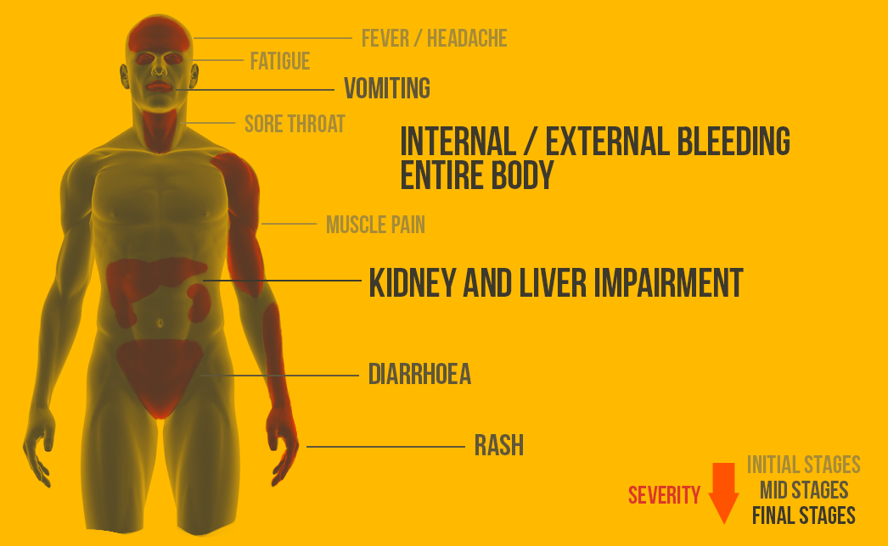

Ebola
"Ebola isn't the pandemic. Fear is."
Overview
What is Ebola?
Ebola is a severe, often fatal disease in humans and nonhuman primates (such as monkeys, gorillas, and chimpanzees). Also known as Ebola Virus Disease(EVD), or Ebola Hemorrhagic Fever(EHF).How does it function?
The disease starts with influenza like symptoms, but soon leads to bleeding from any location on the body, and eventually multiple organ failure.What are the dangers of Ebola?
Ebola is highly contagious, and while not airbourne, is transmitted via bodily fluids. The disease currently holds an average of a 50% fatality rate and is currently untreatable, though symptoms may be managed, and some have recovered through intensive care.Sources of Contact

Bodily Fluids
Such as blood, saliva, semen or other bodily discharges. This includes contact with objects that have come into contact with infected fluids.The Dead
Ebola victim's bodies are still contagious, and continued contact can still spread the disease.Animal Carriers
Contact with an animal carrying the virus, or unsafely eating bush meat can also spread the disease.
Signs and Symptoms
2-21
The symptoms usually take 2 to 21 days to appear after exposure, with the average being 8 to 10 days.Influenza-like
Starting symptoms are deceptively similar to other sicknesses such as Influenza or Malaria.
Sudden Fever
Be wary of a sudden and high fever(greater than 38.6°C or 101.5°F).
Having a fever as well as three of the other listed symptoms is reason to alert medical personel.

Prevention and Safety
Awareness
Be on the watch for those who are symptomatic and stay out of contact with transmission sources. Help share this information with the community.Promptness
Promptly report yourself or those around you to medical proffesionals if you feel you are symptomatic.
Healthcare
Risk of spread is increased in healthcare settings where infected fluids are more likely to be found. Workers must be able to recognize and handle Ebola.Wildlife to Human
Minimize the amount of contact with infected fruit bats or monkeys/apes and the consumption of their raw meat. Animals should be handled with gloves and other appropriate protective clothing. Animal products (blood and meat) should be thoroughly cooked before consumption.Human to Human
Minimize the amount of direct or close contact with people with Ebola symptoms, particularly with their bodily fluids. Gloves and appropriate personal protective equipment should be worn when taking care of ill patients at home. Regular hand washing is required after visiting patients in hospital, as well as after taking care of patients at home.Containment
Measures including prompt and safe burial of the dead, identifying people who may have been in contact with someone infected with Ebola, monitoring the health of contacts for 21 days, the importance of separating the healthy from the sick to prevent further spread, the importance of good hygiene and maintaining a clean environment.
Treatment
Timely treatment of Ebola is important but challenging since the disease is difficult to diagnose clinically in the early stages of infection. Because early symptoms such as headache and fever are not specific to Ebolaviruses, cases of Ebola may be initially misdiagnosed. With these three symptom interventions chances of survival can be significantly increased.
 Providing intravenous(IV) fluids and balancing electrolytes (body salts)
Providing intravenous(IV) fluids and balancing electrolytes (body salts)
Maintaining oxygen status and blood pressure
 Treating other infections if they occur
Treating other infections if they occur
West African Spread

Currently Known
As of Feb. 2015, the Ebola outbreak is currently within Guinea, Liberia, and Sierra Leone. There were also minor cases in Nigeria, the Madrid area of spain, the Bamako area of Mali, and the Dallas/NYC areas of the US. These other cases were imported cases, and minimal contacts. There has been at least 42 days since any new reports of confirmed cases in those minor imported case areas. There has also been a travel associated case in the Dakar area of Senegal. Scotland and England have also recently seen import cases in the UK.Guinea
Affected Areas: Entire country.Liberia
Affected Areas: Entire country.Sierra Leono
Affected Areas: Entire country
More Info/Sources
Data
Information and data obtained from World Health Organization, Center for Diseases Control, and Ebolafacts.com(now down).Icons from TokyoBanzai and Freepik.